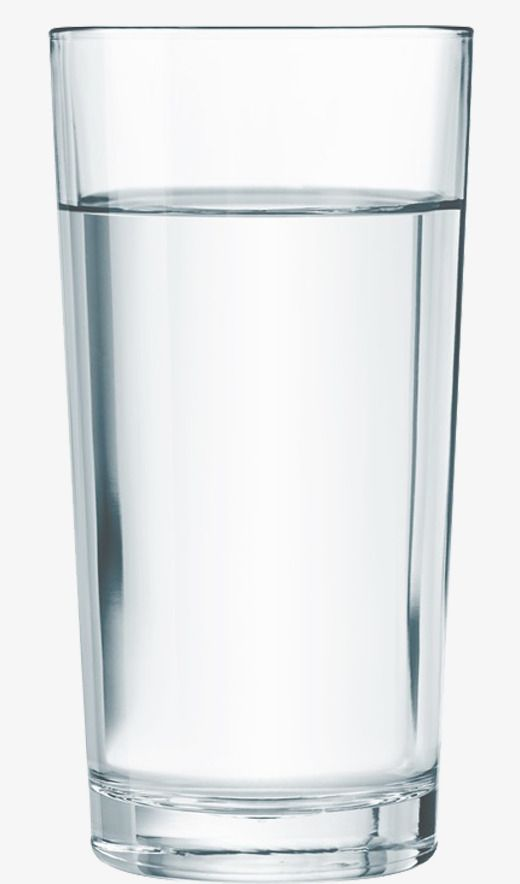

Glass of water recipe

Description
A simple glass of water. Undoubtedly the best thirst-quencher in the universe, at least for carbon-based lifeforms.
Ingredients
- Water cup
- A functioning tap, or some bottled water
Steps
- Take the cup into your dominant hand and place it below the tap
- Turn on the tap
- Wait until the glass is filled with water
- Close the tap
- Enjoy your hydration